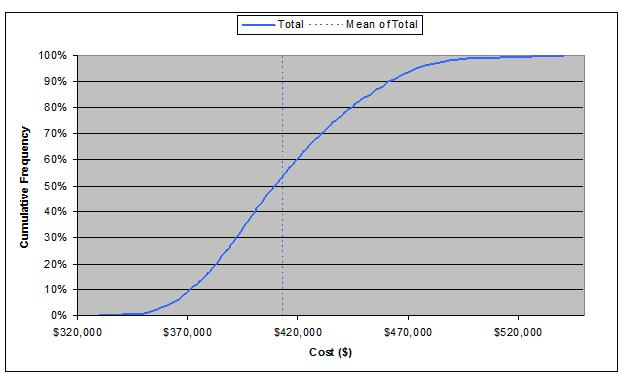

| Guideline: Estimating with Variance |
 |
|
| Related Elements |
|---|
1 DescriptionWhen an estimate is created it will, by default, be an approximation. In order to understand this and communicate it to others it is necessary to assess the variance inherent in the quoted nominal figure(s). This paper contains techniques available for assessing the estimate variance, and hence quoting confidence levels. When reporting the results of any estimation process you should aim for a statement of this nature. The nominal (expected) value of the effort estimate is 4,000 person hours. There is a 90% chance of the actual effort being between 3,600 pers hours and 5,000 pers hours, with a 50% likely-hood of achieving the nominal figure. Such a statement provides additional information from which contingency levels can be assessed. 2 Usage ContextThe approaches you take to creating an estimate will determine which techniques are available for assessing variance. There are four major techniques discussed in this document that will enable variance to be assessed. These are:
Each of these will be considered in Section 3. Note: Gut feel in itself is not a true method for assessing variance, but experience and expertise (the usual basis for gut feel) might be used to provide inputs to some of the techniques above. Other techniques may be used at the descretion of the Estimating Practitioner / Project Manager. 3 Content3.1 Use of Monte Carlo Technique3.1.1 What is the Monte Carlo Technique?The Monte Carlo (MC) technique uses simulation to assess the outcome of an estimation model. The simulation is usually carried out using add-ins to your usual estimating and/or scheduling tools such as Excel and Microsoft Project. When using the technique with a spreadsheet to create an estimate, the add-in requires you to enter data (such as the counts of each estimating factor, or effort conversion figures) as variables rather than the normal single figure. E.g. A function Point count might be entered as a range, with a high, expected and low count, rather than just single figure. In principle you select the key cost drivers as such variables. The add-in then chooses various values of these variables from within your chosen range to ‘run’ simulations of your project. Up to 10,000 simulations can be run, with the add-in choosing different variable values at random from the range. The add-in then reports on the output of these ‘runs’, and is able to assess likely variation on the overall estimate, usually quoting the chance of attaining a particular value for your estimate (see section below on what Monty Carlo can tell you) Thus the result provides an assessment of the confidence you can place in particular estimate and enables you to provide statements such as the italicized example in section 1. Unfortunately most spreadsheets and scheduling tools do not contain Monte Carlo functionality as standard, hence the need for add-ins as described above. An inexpensive add-in for excel comes along with the book entitled ‘Decision Making with Insight’ by Sam L. Savage which has been used successfully used by Project Enablement Services Europe and others within IBM. Others come as straightforward software add-ins, e.g. Risk – Plus, @Risk, and many others. Monte Carlo add-ins are also available for Microsoft Project. It is beyond the scope of this paper to undertake a formal description of the technique, or to tell you which add-in to procure; instead we commend you to the huge variety of sources of information on this topic.
‘Google’ Monte Carlo for a variety of sources from, easy to impossible 3.1.2 What Monte Carlo Output can tell you?This section is a taster for what MC simulation can provide. If you have got access to add-ins or other software that enable you to undertake a MC simulation then you should be able to re-create output of a similar nature to that illustrated below.  Figure 1. Monte Carlo Output: Cumulative Frequency of Achieving a given Cost. By reading the numbers off the graph, outputs of this nature enable you to provide statements such as:
The nominal (expected) cost is $413,261 (mean of total). There is a 90% chance of the cost being
below $461,422. 3.2 Use of Wide Band Delphi and Pert Techniques3.2.1 What is Wide Band Delphi?The Wideband Delphi Technique uses the experience and expertise of project team members to produce an estimate. The participants follow a formal procedure, which encourages them to discuss the problem with one another before arriving at the final estimate. The technique is summarized below. It is best undertaken by a group of experts with appropriately related experience. The objective is for the group of experts to arrive at consensus on a highest, nominal (expected) and lowest value for a variable (e.g. a size in Function Points or the effort to create a specific work product). The basics steps are:
At the end of the process there is a high, nominal and low value estimate for the given variable. Any skew away from a normal distribution should be noted (eg if the nominal is closer to the lower end than the higher you have a skewed distribution). This technique can also be combined with the PERT technique below. EXAMPLE of Wideband Delphi. You ask the question:
“With 99% certainty what are the low, nominal (expected) and high values for the effort to build this application
in Person Months” .
So you can state that
The technique can be used to estimate the size of any variable which is used as an input to the estimation process. Examples include size in LoC, FPs, Use Cases etc. Often the technique is used to develop estimates for individual work products or tasks using the work breakdown structure as the basis. There are many internet web sites which provide details of how to undertake the Wide Band Delphi technique. See particularly the entry in wikipedia. http://en.wikipedia.org/wiki/Wideband_delphi and http://www.stellman-greene.com/aspm/content/view/23/38/ A Wide Band Delphi/PERT worksheet can be used to record and automatically calculate the estimates. The output from this technique may be used as the range input to the Monte Carlo technique discussed in Section 3.1 or the PERT technique in 3.2. 3.2.2 Using the PERT technique on High, Low and Nominal values.The Program Evaluation and Review Technique (PERT) is a technique that uses an assessment of low, expected (most likely) and high values to arrive at a most likely estimate for the variable in question along with a confidence level. These values might come from the Wide Band Delphi technique (see above) OR alternative approaches. A PERT estimate for the expected size of any variable, and a standard deviation is illustrated in the example below. First the following values must be estimated (see Wideband Delphi).
Next the PERT value for the nominal figure is calculated. The formula for the ‘new’ nominal value is (A + (4*B) + C)/6, for the example above:
Next, a confidence level or variance, is calculated for the variable. The PERT formula for the variance (strictly mathematically, an estimate of the standard deviation SD) is (C-A)/6, for this example
This means the following :
There is a 68% chance of the true value lying between 11.3 and 13.0 [12.167 +- 1 SD] So the statement could then be: “There is an approximate 90% chance that the size lies between 10.6 Person Months and 13.4 Person Months with an expected value of 12.2 Person Months”. This assumes an approximately normal distribution. Refer to IBM ICM asset web (Project Estimating Excel workbook) for additional information on project estimating using PERT techniques. 3.3 Choice of an Estimating Tool which Automates Variance AssessmentBuilt in Variance. Some 3rd party estimating tools provide an assessment of the chance of hitting a given estimate in a similar manner to the estimating models discussed under 3.1 which use a Monte Carlo technique. Indeed most such tools often make use of MC techniques to do this. If you are considering procurement of a 3rd party estimating tool then one criteria must be to ensure that it provides a variance around any estimate that it provides as output. What-iffing with your tool. A poor alternative to built in variance assessment within a tool or model is to undertake multiple runs, using your tool of choice, against some worst case, nominal and best case values for your major cost drivers. This is often called what-ifing. I.e. what if my size input was 10 % lower or 25% higher. What-iffing will at least enable you to provide low, expected and high values as tools output, enabling some confidence level on the quoted estimate. Combining this with the PERT techniques of section 3.2 can give a little more rigor to the resulting accuracy statement of the estimate. 3.4 Analysis of Historical Project DataGiven that you have access to repositories which hold the results (actuals) for project effort, cost, schedule etc you can use them to assess typical variation in a given estimate or estimate cost driver. Example of using such a repository. Your project is a New Development of a Web business application with a Client Server architected solution built using rapid application development techniques. Analysis of project data from multiple projects, against such criteria, might provide you with useful information on variance.
EG Typical costs of such developments range from $2,000,000 to $3,000,000 with an median (or average) of $2,700,000
OR etc. You can use this data directly or as input to estimating models for what iffing or via PERT techniques as described above. Historical data is often used to generate Rules of Thumb. See the estimating wiki for examples of such data. Access to such data is by no means a given but there are currently (Sep 06) a number of such repositories within IBM. You will need to request access to most of them. Examples as of this date will be added to the list below as they become available:
4 References
Estimating Wiki contains access to estimating related documents, hints, tips and further reading |
| Change Date | Tue Nov 08 15:32:27 IST 2016 |
|---|---|
| Revisions | Jan 2007 Initial Draft 1.0 |
© Copyright IBM Corp. 1987, 2016 All Rights Reserved |